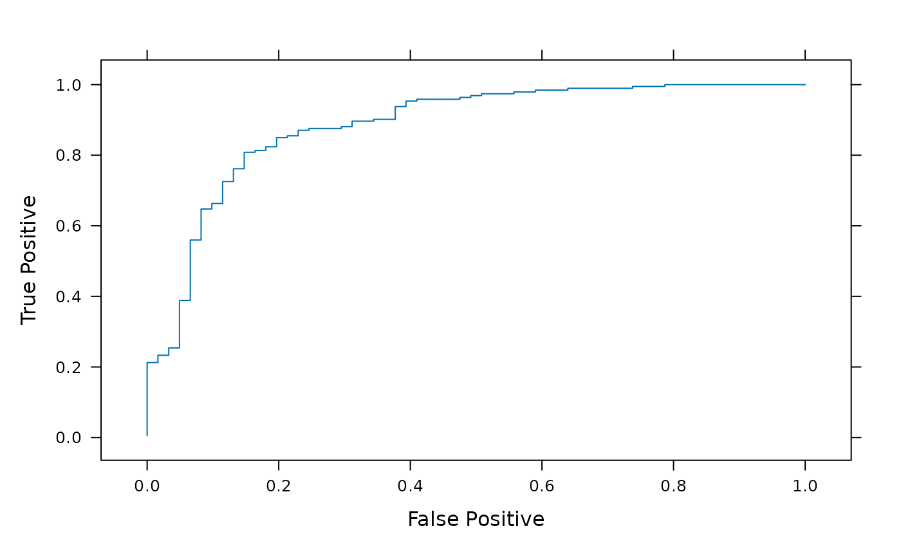

Summarize receiver-operator characteristics
roc.RdReturns a data.frame summarizing the cummulative true- and
false-positive probabilities from expected and observed
classifications.
Arguments
- exp
logical()vector of expected classifications to a particular group.- obs
Predicted probability of assignment to the group identified by
TRUEvalues inexp. The length ofexpandobsmust be identical.- ...
Additional arguments, available to methods.
Value
A data.frame with columns
- TruePositive
Cummulative probability of correct assignment.
- FalsePositive
Cummulative probability of incorrect assignment.
Author
Martin Morgan mailto:mtmorgan.xyz@gmail.com
Examples
library(lattice)
## count matrix
fl <- system.file(package="DirichletMultinomial", "extdata",
"Twins.csv")
count <- t(as.matrix(read.csv(fl, row.names=1)))
## phenotype
fl <- system.file(package="DirichletMultinomial", "extdata",
"TwinStudy.t")
pheno0 <- scan(fl)
lvls <- c("Lean", "Obese", "Overwt")
pheno <- factor(lvls[pheno0 + 1], levels=lvls)
names(pheno) <- rownames(count)
## count data used for cross-validation, and cross-validation
count <- csubset(c("Lean", "Obese"), count, pheno)
data(bestgrp)
## true, false positives from single-group classifier
bst <- roc(pheno[rownames(count)] == "Obese",
predict(bestgrp, count)[,"Obese"])
head(bst)
#> TruePostive FalsePositive
#> 1 0.005181347 0
#> 2 0.010362694 0
#> 3 0.015544041 0
#> 4 0.020725389 0
#> 5 0.025906736 0
#> 6 0.031088083 0
## lattice plot
xyplot(TruePostive ~ FalsePositive, bst, type="l",
xlab="False Positive", ylab="True Positive")
